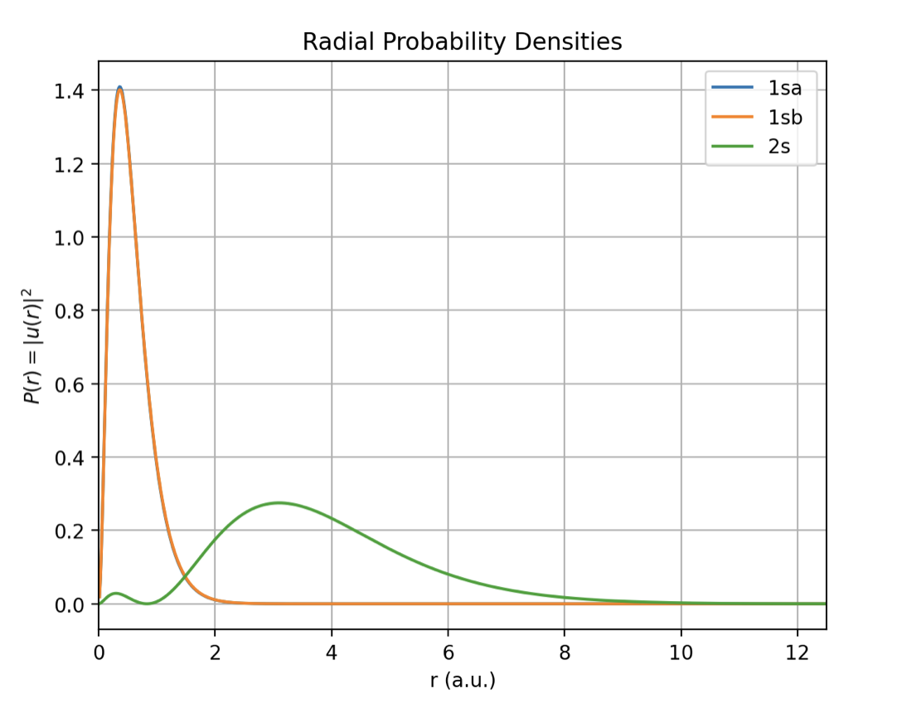
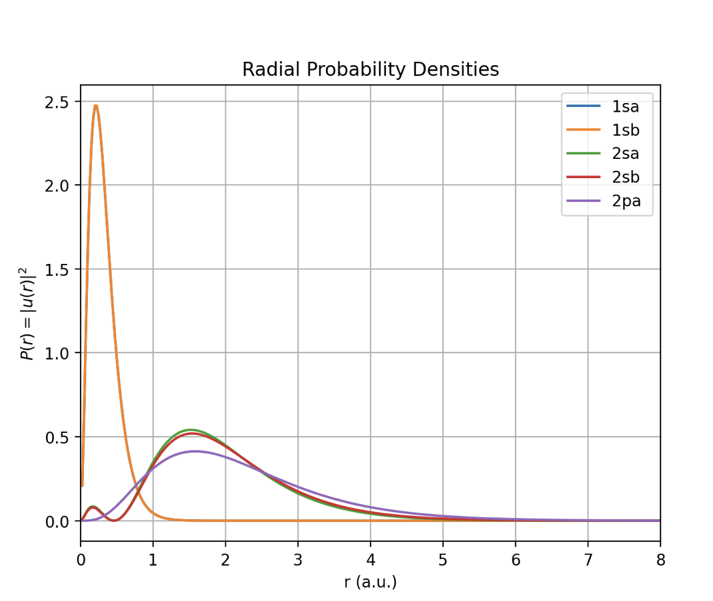
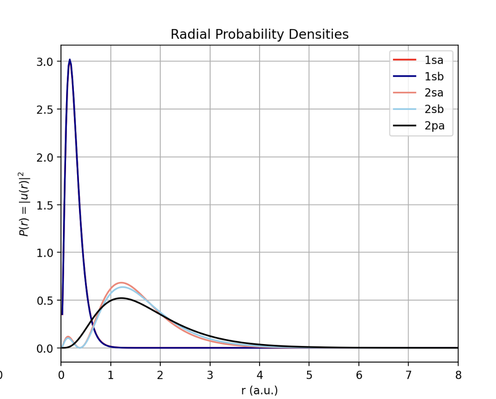

PHYS299 · Bachelor Project
Modelling Atomic Energy Levels with the Hartree–Fock Method
Click a highlighted element to see its method, code and computed energy.
An approximate method to the energy levels of multi-electron atoms, solved on a radial finite-difference grid with the self-consistent field loop. This project covers Lithium, Beryllium, Boron and Carbon — moving from the spherical s-orbitals to the 2p orbital and its dipole correction. The full write-up is under Report.
Element
Total Hartree–Fock energy:
Code
Report
Project report.
Graphs
Computed radial probability densities and comparisons.
Radial probability densities
P(r) = |u(r)|² for each computed atom.



Independent-particle model comparison
HF densities against the hydrogenic independent-particle model, showing the effect of screening and exchange.

Results
Computed total energies against reference values.
| Atom | Config | Etotal (Eh) | Reference |
|---|---|---|---|
| Li | 1s² 2s¹ | −7.4285 | −7.4332 |
| Be | 1s² 2s² | −14.5673 | −14.5752 |
| B | 1s² 2s² 2p¹ | −24.4857 | −24.5351 |
| C | 1s² 2s² 2p² | −37.5734 | −37.7022 |
Orbital energies
Individual orbital eigenvalues (Eₕ) compared to the reference values of Bunge et al. (1993). Spin is indicated by ↑ / ↓.
| Atom | Config | 1s ↑ | 1s ↓ | 2s ↑ | 2s ↓ | 2px ↑ | 2py ↑ |
|---|---|---|---|---|---|---|---|
| Li | 1s² 2s¹ | −2.4837 | −2.4656 | −0.1961 | – | – | – |
| Li ref | 1s² 2s¹ | −2.5233 | −2.4764 | −0.1963 | – | – | – |
| Be restricted | 1s² 2s² | −4.7292 | −4.7292 | −0.3088 | −0.3088 | – | – |
| Be ref | 1s² 2s² | −4.7327 | −4.7327 | −0.3093 | −0.3093 | – | – |
| B | 1s² 2s² 2p¹ | −7.6769 | −7.6619 | −0.5414 | −0.4436 | −0.3102 | – |
| B ref | 1s² 2s² 2p¹ | −7.7663 | −7.6493 | −0.5694 | −0.4431 | −0.3091 | – |
| C | 1s² 2s² 2p² | −11.3049 | −11.2610 | −0.8280 | −0.5867 | −0.4071 | −0.4071 |
| C ref | 1s² 2s² 2p² | −11.3934 | −11.3130 | −0.7816 | −0.6273 | −0.4333 | −0.4333 |